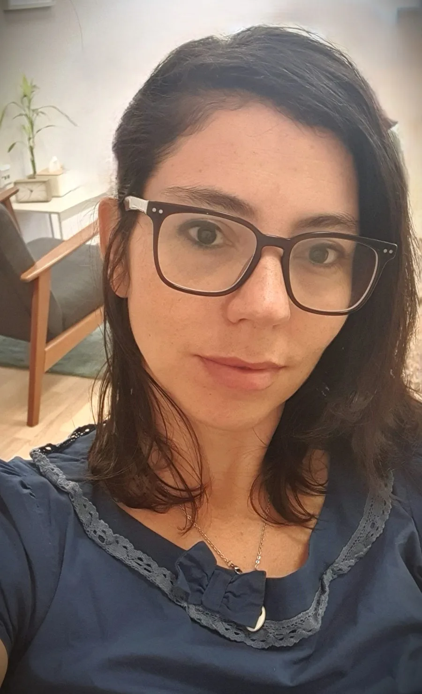

A process shaped around you
The length of treatment is tailored to your needs and goals. It commonly lasts around six months, with the option to continue when helpful.
Online CogFun therapy for adults
Emotional and functional support, with practical tools for adults with ADHD.

Adults with ADHD often experience a frustrating gap between what they know they can do and what actually happens day to day.
Difficulties with organisation, procrastination, emotional overload and feeling stuck can affect people who are already doing their very best.
Therapy creates space to understand your individual patterns of attention, learn to manage ADHD rather than letting it manage you, and build emotional and practical tools designed for real life.
About me
My name is Maly Pinhas. I am an occupational therapist with broad clinical experience across a range of populations, and I now specialise in supporting adults with ADHD.
I work with the cognitive-functional CogFun approach, combining emotional work with the development of practical strategies for everyday life.
I hold a bachelor’s degree in Occupational Therapy from the University of Haifa and a master’s degree from the Hebrew University of Jerusalem, with over 18 years of clinical experience.
My aim is not only to understand the difficulties, but to translate them into practical tools that can improve both your daily functioning and your personal experience. We work at your pace, in a way that feels right for you.
View my professional profile on LinkedInHow treatment works
Therapy takes place online, offering flexibility alongside focused, in-depth therapeutic work.
The length of treatment is tailored to your needs and goals. It commonly lasts around six months, with the option to continue when helpful.
Sessions take place once a week at a regular time. You will need a quiet space and a stable internet connection so you can focus and get the most from each meeting.
The work is collaborative, paced to suit you and connected to the realities of your daily life.
What matters to me in therapy
Get in touch
If you would like to check whether the treatment is suitable or simply hear more, you are warmly invited to contact me.